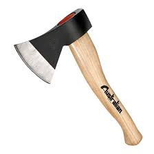
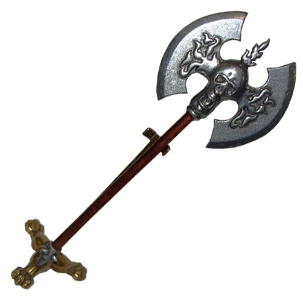
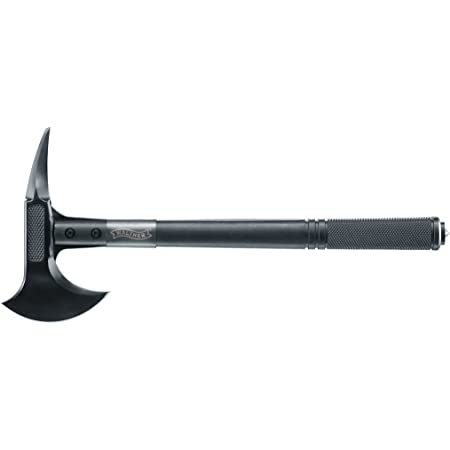
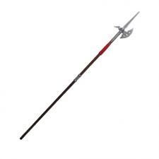
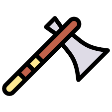

| Accetta | Ascia bipenne | Tomahawk | Alabarda |
|  |  |  |  |
L'accetta è un attrezzo manuale utilizzato nella sbozzatura e nel taglio della legna.
Inoltre l'accetta può essere usata anche per altre attività come lo scautismo (viene usato normalmente il modello canadese). Le accette vengono normalmente impungate a mano singola, mentre le scure
sono una versione più grande dell'accetta che viene impugnata normalmente a due mani.
L'ascia bipenne, dotata cioè di duplice lama, veniva utilizzata da molte popolazioni dell'antichità come arma sacrificale e pertanto considerata come simbolo di potenza divina.
Famosa arma bianca, usata principalmente dalle popolazioni dei Nativi americani, di origine norrena. Utilizzate principalmente per cacciare, lanciandole sulle prede. Successivamente con il passare degli anni vennero istituite delle discipline sportive come il Throwing Axe
.
Arma risalente al periodo Medievale, usata soprattutto nella cavalleria, visto la sua lunghezza dava la possibilità di colpire i nemici che combattevano a terra, oppure veniva usate nelle forze di terra per proteggere punti fissi strategici. Dopodichè venne meno utulizzata nell'ambito bellico ma venne usato in ambito cerimoniale o dalle guardie reali o pontefiche.
ATTEZIONE!! In base a quale materiale scegliete varierà il prezzo del prodotto finale
Ecco un video illustrativo su come vengono prodotte le nostre asce,  (link al video)